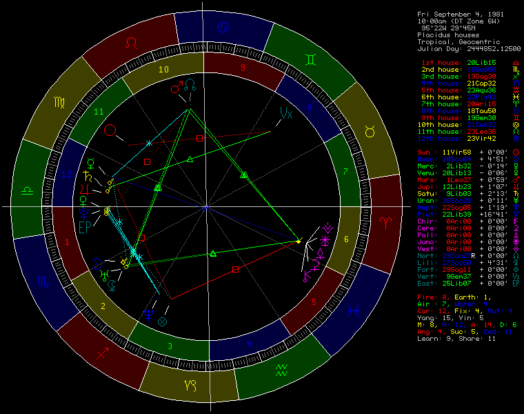

Suhte Röntgen
€24.90
Täielik sodiaagimärkide sobivusaruanne. 40+ lehekülge sinu suhtedünaamikast, armastuse keemiast ja kasvualadest.

40+ leheküljeline psühholoogiline portree 20 taevakeha täpsete positsioonide põhjal sinu sünnihetkel. Mitte ennustamine — isiksuse dekodeerimine.
Ascendent Kaaludel: esmamulje on graatsia, harmoonia ja esteetiline täius. Kõik on kureeritud — kuvand, liikumine, esitlus. Kaalude ascendendi inimesed on teravalt teadlikud sellest, kuidas neid tajutakse, ja kasutavad seda teadlikkust loomingulise tööriistana.
Neitsi Päike glamuuri all paljastab väsimatu perfektsionisti. Neitsi on meisterlikkuse, detailide ja 10 000 tunni reegli märk. Skorpioni Kuu lisab emotsionaalset sügavust ja intensiivsust — vulkaaniline sisemaailm, kontrollitud pinnal, sulav all.
Loe Beyoncé täisaruannet10 planeeti (Päikesest Pluutoni), Chiron, Ceres, Pallas, Juno, Vesta, Põhjasõlm, Lõunasõlm, Must Kuu Lilith, Vertex, Saatuse Ratas.
Konjunktsioon, sekstill, kvadratuur, triin, opositsioon, poolkvadratuur, poolteistkvadratuur, kvinkunks, poolsekstill — igaüks täpse orbiga.
Täielik majasüsteem valitsejatega. Mitte lihtsustatud võrdsed majad.
T-kvadraadid, Suured Triinid, Jodid, Suured Ristid, Stelliumid — tuvastatud ja interpreteeritud.
Tulemärgid, maamärgid, õhumärgid, veemärgid — sinu elementaalne jaotus. Kardinaalsete, fikseeritud ja mutaabelsete suhe.
Iga retrograadne planeet tuvastatud ja interpreteeritud kontekstis.
Sinu kaart sisaldab 50+ planetaarset aspekti. Me interpreteerime igaühe neist.
€24.90
Täielik sodiaagimärkide sobivusaruanne. 40+ lehekülge sinu suhtedünaamikast, armastuse keemiast ja kasvualadest.
€34.90
40+ leheküljeline nataalkaardi isiksusaruanne, mis hõlmab 12 eluvaldkonda. Sodiaagimärgi omadused, emotsionaalsed mustrid, karjääri tugevused — kirjutatud sinu kaardi jaoks.
€24.90
Mõista oma last läbi tema nataalkaardi. Emotsionaalsed vajadused, õppimisstiil, looduslikud anded ja väljakutsed, millega ta silmitsi seisab.
Nimi, kuupäev, täpne kellaaeg ja sünnilinn.
Astrolog 7.80 arvutab täpsed positsioonid 20 taevakehale, kaardistab 50+ aspektikonfiguratsiooni täpsete orbidega ja joonistab kõik 12 Placiduse maja. Seejärel eraldame sinu kaardi unikaalse signatuuri — konkreetse planeetide kaalude, elementaalse tasakaalu ja aspektigeomeetria mustri, mis kuulub ainult sulle.
Sinu kaardi andmed läbivad 13 analüüsimoodulit, mis põhinevad Liz Greene’i, Robert Handi ja Steven Forresti interpretatsiooniraamistikes. Iga peatükk kirjutatakse individuaalselt sinu asetuste jaoks — ristiviidates aspekte, majavalitsejaid ja dispositoorahelaid. Ilma mallideta. Ilma taaskasutatud lõikudeta.
Iga aruanne on toimetatud ja kontrollitud sidususe, täpsuse ja sügavuse osas. PDF toimetatakse sinu e-postile 24 tunni jooksul.
| Näitaja | ZodiacID | Tavalised astrorakendused |
|---|---|---|
| Sügavus | 40+ lehekülge analüüsi | 2–3 lõiku märgi kohta |
| Taevakehad | 20 (sh asteroidid) | Ainult Päikesemarkk (või 10) |
| Majasüsteem | Placidus (täpne) | Võrdsed majad või puudub |
| Aspekti tüübid | 9 (sh väiksemad) | Ainult 5 peamist |
| Aspektide orbid | Täpsus kaareminutini | Üldistatud, ilma orbiandmeteta |
| Keeled | 3 emakeelt (EN/RU/ET) | Tõlgitud või ainult EN |
| Isikupärastamine | Individuaalselt kirjutatud sinu kaardi jaoks | Mallipõhised lõigud |
| Kvaliteedikontroll | Kontrollitud enne kohaletoimetamist | Kohene ja kontrollimata |
„Lõpuks nataalraport, mis tundus kirjutatud mulle, mitte üldine horoskoop.“
— M.K., Tallinn
„Sünastria-aruanne pani sõnadesse dünaamikad, mida olime tundnud, aga kunagi mõistnud.“
— J. ja L., Berliin
„Iga euro väärt. Selge, läbimõeldud, ilma veeta.“
— A.S., Helsingi
„Mul on olnud konsultatsioone varem, aga mitte midagi nii konkreetset. See nimetas mustreid, mille mõistmiseks kulus mul aastaid teraapias.“
— T.R., Berliin
„Tellisime Suhte Röntgeni enne kokkukolimist. See ei ilustanud midagi, aga andis meile sõnavara meie hõõrdepunktide jaoks.“
— K. ja M., Helsingi
„Lapsevanema Juhend aitas mul mõista, miks mu tütar sulgub, kui tõukan teda olema rohkem seltskondlik. See on tema Kuu Skorpionis, mitte trotsikkus.“
— J.L., Tallinn
40+ leheküljeline nataalkaardi aruanne PDF-formaadis, mis hõlmab 12 eluvaldkonda — isiksuseõmused, armastuse mustrid, karjääri tugevused ja palju muud. Sisaldab sinu nataalkaardi visualiseeringut. Toimetatakse otse sinu e-postile.
Sinu sünniandmed läbivad mitmeastmelise analüüsiprotsessi. Esmalt arvutab Astrolog 7.80 (Swiss Ephemeris) täpsed positsioonid 20 taevakehale ja kaardistab 50+ aspektikonfiguratsiooni täpsete orbidega. Seejärel eraldame sinu kaardi unikaalse statistilise signatuuri — planeetide kaalud, elementaalse jaotuse, aspektigeomeetria ja dispositoorahelad. Iga 13 aruandepeatükist kirjutatakse individuaalselt sinu asetuste jaoks, kasutades Liz Greene’i (psühholoogiline astroloogia), Robert Handi (süstemaatiline aspektianalüüs) ja Steven Forresti (evolutsiooniline astroloogia) interpretatsiooniraamistikke. Iga aruanne on individuaalselt koostatud ja kvaliteedikontrollitud enne kohaletoimetamist.
Iga aruanne on individuaalselt kirjutatud ja kvaliteedikontrollitud. 20 taevakeha, 50+ aspekti täpsete orbidega, dispositoorahelad ja majavalitsejate ristiviited. 40+ lehekülge originaalset sünnikaardi interpretatsiooni — ilma mallideta, ilma taaskasutatud lõikudeta. Saadaval emakeelselt 3 keeles.
Ei. Astroloogia ei ole teadus. Me ei ennusta tulevikku — pakume eneseavastamise raamistikku sinu sünnikaardi põhjal.
Kontrolli sünnitunnistust või küsi pereliikmelt. Ligikaudne aeg sobib tavaliselt, kuigi täpne annab kõige üksikasjalikumad tulemused.
24 tunni jooksul. Iga aruanne on individuaalselt koostatud ja kvaliteedikontrollitud enne kohaletoimetamist.
Jah. Täielik tagasimakse 14 päeva jooksul, ilma lisaküsimusteta.
Inglise, vene ja eesti — kirjutatud emakeelselt, mitte tõlgitud.